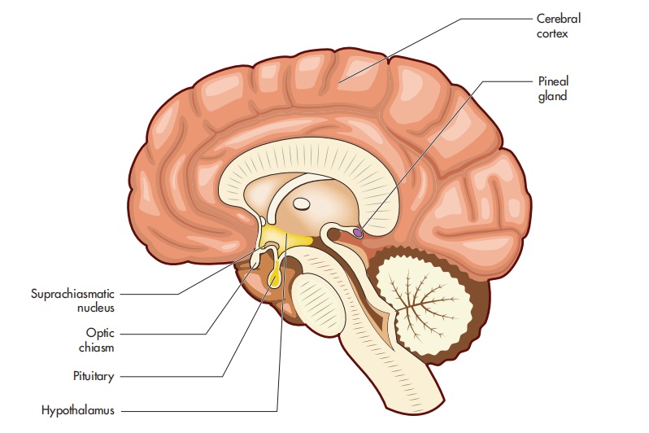
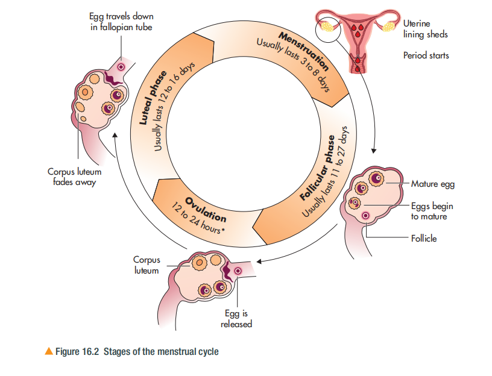
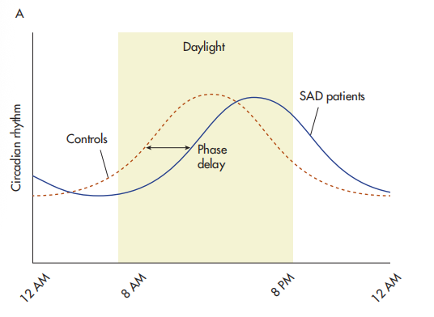

🧠 CHAPTER 16: BODY RHYTHMS
人体节律
1. Learning Objectives（学习目标）
⚡ Quick Summary — 本节要学什么
This chapter is about the natural rhythms of your body — the 24-hour sleep-wake cycle and the monthly menstrual cycle — and what happens when those rhythms go wrong (seasonal affective disorder, 季节性情感障碍). In the exam (Paper 2), this content appears in Section A short questions and, very often, as a 12-mark essay in Section C. Recent papers asked you to evaluate infradian rhythms as an explanation of SAD (May 2025) and to assess the role of internal pacemakers in the sleep-wake cycle (May 2026) — both are fully covered in this chapter.
🎯 By the end of this chapter, you should be able to:
- Understand the nature of body rhythms（人体节律的本质）— circadian, ultradian, infradian and circannual rhythms
- Explain the role of internal pacemakers (body clock, 内部起搏器) and external zeitgebers (external time-givers, 外部授时因子) in the regulation of the circadian sleep-wake cycle, and research in this area
- Describe and evaluate infradian rhythms, including the menstrual cycle (月经周期), and research in this area
- Explain seasonal affective disorder (SAD) and therapies to treat it, including light therapy (光照疗法)
2. Getting Started — What Is a Body Rhythm?（什么是人体节律？）
⚡ Quick Summary
Body rhythms（人体节律）are natural, recurring patterns or cycles that occur in various biological processes within the body. They are categorised according to how long the cycle lasts — from shorter than a day to longer than a year.
The four types of body rhythm
| Type（类型） | Duration（周期长度） | Examples（例子） |
|---|---|---|
| Circadian rhythm 昼夜节律 |
≈ 24 hours | Body temperature（体温）; the circadian sleep-wake cycle（睡眠-觉醒周期） |
| Ultradian rhythm 超昼夜节律 |
Less than 24 hours | Eating（进食）; the stages of sleep in a night（一晚睡眠中的睡眠阶段） |
| Infradian rhythm 亚昼夜节律 |
Longer than 24 hours | The menstrual cycle（月经周期）, lasting around 28 days |
| Circannual rhythm 周年节律 |
About a year | Hibernation（冬眠）; migration（迁徙）; seasonal affective disorder（季节性情感障碍） |
What regulates body rhythms?
These rhythms are regulated by an internal body clock, known as an internal pacemaker（内部起搏器）, and influenced by external cues, known as exogenous zeitgebers（外部授时因子）— literally "external time-givers" — for example, light. Disruption to body rhythms can cause physical and psychological problems.
🔍 Getting Started Activity — Identify the rhythm（识别节律）
In pairs, identify which body rhythm each description is referring to:
- A 24-hour rhythm that everyone has which involves two different phases, and without which we get extremely tired and lose concentration
- A rhythm of contractions and relaxations of a muscle that moves blood around the circulatory system
- A rhythm of inhaling and exhaling air in and out of the lungs to provide the body with oxygen and remove carbon dioxide
- A recurring monthly rhythm present in females which prepares the body for reproduction
- A rhythm that occurs around three times a day to provide the body with nutrients
- An annual rhythm that involves some animals undergoing a period of rest during the winter months
- A rhythm where animals move to different locations for food, warmth and reproduction
Once you have identified each rhythm, consider and discuss what factors might alter or influence each rhythm.
🔗 Link to other chapters
An example of research into factors affecting the sleep-wake cycle was conducted by Hoefelmann et al. (2006) — this is one of your two choices of contemporary study for Topic C, discussed in more detail on pages 210–213 of the textbook. In the January 2025 Paper 2, the Section C essay gave you the choice of evaluating McDermott (2008) or Hoefelmann et al. (2006) — so if you choose Hoefelmann, this chapter is its home territory.
3. The Circadian Sleep-Wake Cycle（昼夜睡眠-觉醒周期）
⚡ Quick Summary
The typical human experiences a period of sleep and wakefulness every day (24 hours). This cycle is regulated by an internal pacemaker called the suprachiasmatic nucleus (SCN), and it is reset by light and other external zeitgebers such as mealtimes. The key chain to remember: light → SCN → pineal gland → melatonin → sleepiness.
The role of the SCN (suprachiasmatic nucleus)
The cycle of sleeping and being awake is regulated by an internal pacemaker called the suprachiasmatic nucleus (SCN)（视交叉上核）. The SCN is a cluster of neurons located in the hypothalamus（下丘脑）, and its role is to act as a clock or timer that maintains the sleep-wake cycle.
The SCN contains cells which are receptive to light. The process works like this:
- Light in the blue-green spectrum（蓝绿光波段）is received by a specialised group of retinal cells（视网膜细胞）in the eye
- This is detected by the SCN
- In response, the SCN influences the pineal gland（松果体）to suppress the production of melatonin（抑制褪黑素分泌）→ we stay awake and alert
- When darkness falls, the decrease in light levels is detected by the SCN, which signals to the pineal gland to produce melatonin
- Melatonin is released into the bloodstream and promotes drowsiness（促进困倦）→ we sleep

Figure 16.1 The location of the SCN（视交叉上核）, optic chiasm（视交叉）, hypothalamus（下丘脑）, pituitary gland（脑垂体） and pineal gland（松果体）. Light information travels from the retina → optic chiasm → SCN → pineal gland → melatonin.
- Melatonin（褪黑素）: a hormone produced by the pineal gland which regulates the circadian rhythm.
- Pineal gland（松果体）: a brain structure which receives information about light and darkness from the environment and responds to darkness by secreting melatonin.
So while the sleep-wake cycle is regulated by the SCN, it seems to be reset or synchronised by the light levels we experience. It is also reset by other external zeitgebers, such as mealtimes.
Light is the main zeitgeber — but not the only one
Light is the main external/exogenous zeitgeber for the sleep-wake cycle, but it is not the only one to influence it. External temperature, exercise and mealtimes can also cue us to sleep and wake.
🧠 Thinking Like a Psychologist — blue light at night
If we understand that light levels influence the internal pacemaker that regulates sleep, we can begin to understand how sleep can be promoted by reducing light levels. How would you explain this to someone who reports that they do not get enough sleep? What advice would you give them to promote more sleep? Consider sources of light (especially blue light) which we use every night, such as mobile phones and televisions.
4. Variations in the Sleep-Wake Cycle（睡眠-觉醒周期的变化）
⚡ Quick Summary
The sleep-wake cycle is not identical for everyone. It varies across the lifespan (melatonin levels rise and fall from birth to old age), between individuals (morning vs evening people), and with lifestyle (shift work, travel across time zones, caffeine).
3.1 Variation across the lifespan（一生中的变化）
Levels of melatonin produced by the pineal gland fluctuate throughout life:
| Life stage（人生阶段） | Melatonin & sleep pattern（褪黑素与睡眠模式） |
|---|---|
| Newborns under 3 months | Produce no or very little melatonin themselves — they receive it through breastmilk（母乳） |
| 3 months → puberty | Melatonin levels continue to rise |
| Puberty（青春期） | Levels decline — which explains why teenagers stay up late at night |
| Early adulthood | Levels even out（趋于平稳） |
| Around 40 → old age | Levels remain fairly stable until around 40, then steadily decline — which may explain why older people wake earlier |
These fluctuations show how the circadian sleep-wake cycle varies throughout life.
3.2 Variation between individuals（个体差异）
Some are "morning people"（早鸟型）— they prefer to rise early and go to bed early, as they are more alert in the early hours. Others are "evening people"（夜猫型）— they prefer to rise later and sleep later, as they are more alert in the later hours.
3.3 Variation because of lifestyle（生活方式带来的变化）
- Shift work（轮班工作）: shift workers required to work at different times of the day and night find it difficult to maintain a regular sleep-wake cycle
- Travel（旅行）: travelling to different time zones which are in conflict with our internal pacemaker — this is jet lag（时差反应）
- Medications and drinks（药物与饮品）: for example, caffeine（咖啡因） is a stimulant that interferes with melatonin function
5. Evaluation — The Role of the SCN as an Internal Pacemaker（评价：SCN 作为内部起搏器）
⚡ Quick Summary
The circadian rhythm is internally regulated by the SCN as an endogenous pacemaker and externally by exogenous zeitgebers — they work together to maintain a normal sleep-wake cycle. Two key animal studies support the role of the SCN: DeCoursey et al. (2000) with chipmunks, and Ralph et al. (1990) with hamsters.
Procedure（程序）: Patricia DeCoursey and colleagues used radio collars（无线电项圈）to study the survival rates of free-living eastern chipmunks living in the Allegheny Mountains in the US:
- 30 chipmunks received surgical lesions to the SCN（SCN 损毁手术）
- 24 had surgery not affecting the SCN (sham comparison)
- 20 were intact controls（正常对照组）
Findings（结果）: a significantly higher proportion of SCN-lesioned chipmunks were killed by weasels（黄鼠狼捕食）during the first 80 days following release. The SCN-lesioned chipmunks showed increased nocturnal movement in their dens（夜间在洞穴中过度活动）, which served to attract the weasel predators.
Conclusion（结论）: this research demonstrates the importance of the SCN in controlling the sleep-wake cycle — damage to the SCN causes disruption to the circadian rhythm, with fatal consequences.
AO3: field experiment with real survival consequences — high ecological validity, but raises serious animal ethics issuesProcedure（程序）: a graft of the SCN from a donor hamster was transplanted（移植）into a hamster whose own SCN had been destroyed.
Findings（结果）: not only did the transplant restore the circadian rhythm in the hamster, it also adopted the same circadian rhythm as its donor — the recipient's cycle now matched the donor's cycle.
Conclusion（结论）: strong evidence that the SCN is the internal pacemaker controlling the timing of the sleep-wake cycle. If the rhythm follows the transplanted SCN, the SCN must be the "clock" itself.
AO3: elegant causal evidence — the rhythm moved with the transplant — but again animal research, so caution when generalising to humansTwo cautions when using this research（两点谨慎）
- Animal research（动物研究）: we should be cautious when using animal research to explain the regulation of the human circadian sleep-wake cycle — chipmunks and hamsters are not humans.
- Other internal pacemakers exist: whilst the SCN exerts a considerable influence over the circadian rhythm, there are other internal pacemakers, such as peripheral oscillators（外周振荡器）— biological clocks in various organs and tissues around the body (for example, regulating liver function and digestion), which are synchronised with the SCN to regulate the circadian rhythm.
Peripheral oscillators（外周振荡器）: biological clocks in various organs and tissues around the body which are synchronised with the SCN to regulate the circadian rhythm.
🌍 Wider Issues and Debates — Animal ethics（动物伦理）
Research that deliberately destroys parts of an animal's brain, or puts them at risk of harm or even death, may be ethically questionable. For example, DeCoursey et al. exposed the chipmunks to predation as a result of surgical lesioning to the SCN destroying their sleep-wake cycle. Animal research demands that a cost-benefit analysis（成本收益分析）is conducted before animals are put at risk of harm. Many factors need to be considered, such as the likelihood of benefits gained from conducting the research. Understanding the role of the SCN in regulating our circadian rhythms should yield a benefit to humans for the research to be justifiable.
6. Evaluation — The Role of Exogenous Zeitgebers（评价：外部授时因子）
⚡ Quick Summary
How do we know external cues matter? Researchers remove the zeitgebers and see what happens. Without light, the free-running body clock runs slightly longer than 24 hours (Siffre; Aschoff & Wever). But there are limits: Folkard showed the clock resists extreme external shifts, and blind people's cycles become desynchronised without light (Skene & Arendt).
1962 study: French geologist Michel Siffre set up camp in a cave in the French Alps, 130 metres below surface level. The cave had no natural light, and he did not have a watch — so Siffre had no way of knowing whether it was day or night. He wanted to investigate whether the circadian sleep-wake cycle would be affected by the absence of external zeitgebers. Without external zeitgebers, his endogenous pacemaker would be "free-running"（自由运转）.
- Siffre descended on 16 July 1962 and was due to ascend on 14 September (two months later)
- When notified to resurface, Siffre thought it was only 20 August — his sense of time had drifted badly
- He slept and woke when he felt like it; his sleep-wake cycle was slightly longer than expected, at around 24 hours 30 minutes
1972 study: Siffre repeated the study in Midnight Cave, Texas, for six months. Twice he adjusted to a 48-hour sleep-wake cycle — 36 hours of wakefulness followed by 12 hours of sleep.
Conclusion（结论）: in the absence of external zeitgebers, the internal pacemaker regulates sleep and wakefulness on its own, but in a slightly longer cycle. External zeitgebers (like light) play the role of resetting our SCN to maintain a regular 24-hour sleep-wake cycle.
AO3 weakness: a case study of ONE participant, in his later years, suffering extreme loneliness — limits generalisabilityWhile case studies such as Siffre's are important, we cannot base our knowledge on a sole participant. Jurgen Aschoff and Rütger Wever (1962) studied participants who lived in a Second World War bunker devoid of natural light for three to four weeks:
- 85% adjusted to a sleep-wake cycle of between 25 and 27 hours
- This result seems in agreement with Siffre: our free-running endogenous pacemaker runs a little longer than 24 hours, and we need light to synchronise our body clock to our environment
Phase shifts — moving the body clock（相位移动）
Diane Boivin et al. (1996) used varying light intensities to phase shift（相位移动）the internal pacemaker from its normal cycle. Phase shifting involves altering the timing of a circadian rhythm to a new schedule by adjusting external zeitgebers, such as light. This can be done intentionally in experiments, but also occurs naturally when we cross time zones or undertake shift work. There are two directions:
⬇️ Phase delay（相位延迟）
Shifting the internal pacemaker to a later time. For example, if you travel west to a country where the time zone is behind your own, you have to delay going to bed.
⬆️ Phase advance（相位提前）
Shifting the internal pacemaker to an earlier time. For example, if you travel east to a country where the time zone is in front of your own, you have to go to bed earlier.
Research has also shown that when the endogenous pacemaker is desynchronised by altering light phases, we struggle to adjust. Simon Folkard et al. recruited 12 healthy student volunteers; in four groups of three, they were isolated from all external zeitgebers except a clock for three weeks. The students went to bed at 11:45 p.m. and were woken by an alarm at 07:45 a.m.
- For the first four days the clock maintained the correct time
- The researchers then covertly adjusted the clock to run 20 minutes faster each day until a 23-hour day was reached
- Then the clock ran ten minutes faster each day until a 22-hour day was reached
Findings（结果）: for the first nine days (normal time up to the 23-hour day), the students' sleep-wake cycle synchronised to the clock as a zeitgeber. But when the clock was sped up to 22-hour days, the students failed to adjust — their sleep-wake cycle averaged 25.48 hours.
Conclusion（结论）: the free-running endogenous pacemaker cannot be easily desynchronised by external zeitgebers — the internal clock is powerful and resists extreme external shifts.
The importance of exogenous zeitgebers is also supported by Debra Skene and Josephine Arendt (2007), who found that:
- Partially sighted individuals have a normal sleep-wake cycle, as they can perceive some light
- Fully blind individuals with no light perception suffer from daytime sleepiness, daytime napping and a poor night's sleep
Conclusion（结论）: the inability to detect light as an exogenous zeitgeber results in a desynchronised circadian sleep-wake rhythm. Light as a zeitgeber is not a luxury — it actively keeps our clock locked to 24 hours.
7. Real-Life Applications（现实应用）
⚡ Quick Summary
Research into zeitgebers has real applications: artificial light for shift workers, gradual sleep-schedule changes before travel (jet lag), and blue-light filters on devices. Disrupted rhythms also link to emotional well-being — reduced daylight in winter can lead to seasonal affective disorder.
| Problem（问题） | Application of research（研究如何应用） |
|---|---|
| Shift work（轮班工作） | Shift workers work unsociable hours (late, early, night), causing extreme tiredness and putting them at risk of workplace injury and accidents through lack of alertness. Using artificial light in the workplace can reduce the problems of circadian disruption. |
| Jet lag（时差） | Travelling across time zones disrupts the circadian rhythm. It can help to gradually shift your sleep schedule to adjust to the new time zone before travelling. |
| Modern devices（电子设备） | Extended use of computers, mobile phones and televisions produces artificial light that interferes with melatonin suppression. It is recommended that light filters（滤光/夜间模式）are fitted on devices to reduce exposure to blue light. |
| Emotional well-being（情绪健康） | Exposure to natural daylight is critical for a normal circadian sleep-wake rhythm. Reduced daylight in the winter months can lead to loss of energy and depression — seasonal affective disorder (SAD)（季节性情感障碍）, covered in Section 10. |
8. Infradian Rhythms — The Menstrual Cycle（亚昼夜节律：月经周期）
⚡ Quick Summary
Infradian rhythms last longer than 24 hours — slower cycles than the circadian rhythm. The menstrual cycle（月经周期）is around 28 days in females. Other infradian cycles are longer still, such as annual hibernation and migration in animals. In humans, seasonal affective disorder is also an infradian rhythm — a decline in mood in autumn/winter and improvement in spring.
What happens during the menstrual cycle?
When females reach puberty they begin the menstrual cycle — a recurring cycle over the month involving physical changes that prepare a female for pregnancy（怀孕）:
- Menstruation（月经期）: the cycle begins with the bleeding phase, where the lining of the uterus (womb) sheds（子宫内膜脱落）. Menstruation can last around five to seven days.
- Following menstruation, the pituitary gland（脑垂体）releases follicle-stimulating hormone (FSH)（卵泡刺激素）, which stimulates the ovaries（卵巢）to produce eggs.
- The hormone oestrogen（雌激素） is at its lowest on day 1 and gradually increases as the eggs mature.
- Ovulation（排卵） occurs half-way through the cycle: the ovaries release a mature egg into the fallopian tube（输卵管）, where it can be fertilised by sperm.
- Progesterone（孕酮） is released to prepare the uterine lining for implantation（着床）of the fertilised egg.
- If the egg is not fertilised, the levels of oestrogen and progesterone fall, which leads to the lining of the womb being shed — and the cycle repeats.

Figure 16.2 Stages of the menstrual cycle: menstruation（月经期）→ follicular phase（卵泡期）→ ovulation（排卵期）→ luteal phase（黄体期）, usually lasting ~28 days.
The HPG axis — the internal pacemaker of the menstrual cycle
The menstrual cycle is controlled by the interaction of hormones and the hypothalamic-pituitary-gonadal (HPG) axis（下丘脑-垂体-性腺轴）within the body, which acts as the internal pacemaker for this infradian cycle:
- The hypothalamus（下丘脑） releases gonadotropin-releasing hormone (GnRH)（促性腺激素释放激素）
- This stimulates the pituitary gland to secrete FSH and luteinising hormone (LH)（黄体生成素）
- FSH triggers the development of eggs and the production of oestrogen
- LH triggers the release of the egg during ovulation
- After ovulation, progesterone is released to prepare the uterine lining for implantation; if this does not occur, hormone levels drop
This means the internal pacemakers controlling the menstrual cycle form a feedback loop（反馈回路）at each stage of the process.
Hormones and mood — PMS and PMDD
Fluctuations in the hormones oestrogen and progesterone can influence a woman's mood during the menstrual cycle:
- Premenstrual syndrome (PMS)（经前综合征）can occur in some individuals, causing mood swings and irritability（情绪波动与易怒）in the days leading up to menstruation as a result of hormone changes
- For some people, these hormonal changes can lead to symptoms of depression — an extreme form of PMS known as premenstrual dysphoric disorder (PMDD)（经前烦躁障碍）
- Hormone changes can also lead to issues maintaining attention, memory problems, changes in appetite and increased pain sensitivity（疼痛敏感性提高）
9. Evaluation — Infradian Rhythms（评价：亚昼夜节律）
⚡ Quick Summary
As with other biological rhythms, the infradian rhythm is influenced by both internal pacemakers and exogenous zeitgebers. Internal regulation is supported by hormonal evidence, contraceptives and Moos et al. (1969). External influence is shown by Lin et al. (1990) with light, Labyak et al. (2010) with shift work, and the famous menstrual synchrony research (McClintock 1971; Stern & McClintock 1998) — which Ziomkiewicz (2006) has since challenged.
- Well supported by scientific evidence related to female reproduction and hormonal changes: it is well established that the menstrual cycle is defined by specific hormonal changes — the rise and fall of oestrogen and progesterone — at certain phases of the cycle. While the discoveries of these hormones date back to the early 1920s, endocrinologists Georgeanna and Howard Jones are reported to be the first to track oestrogen and progesterone levels through the menstrual cycle.
- Birth control and infertility research: the combined oral contraceptive pill contains synthetic forms of oestrogen and progesterone which cumulatively suppress ovulation — hormonal contraceptives are highly effective in preventing pregnancy by suppressing the normal internal pacemakers involved in this infradian rhythm. Research into the menstrual cycle also contributed to IVF（体外受精）: the first IVF clinic was established in Manchester, England, leading to the birth of Louise Joy Brown in 1978; in the USA, Georgeanna and Howard Jones established their IVF programme, leading to the birth of Elizabeth Carr in 1981.
Rudolph Moos et al. found that changes in menstrual symptoms (pain) and mood (anxiety) changed in relation to what phase of the menstrual cycle the females were in. This was consistent across the 15 females studied, suggesting that the menstrual cycle is an internally regulated infradian rhythm.
Havva Saglam and Fatma Basar found a relationship between premenstrual syndrome (PMS) and anger in a cross-sectional study of 720 women living in the province of Kutahya, Türkiye. Of the 49% of women experiencing PMS, higher anger scores and lower control of anger scores were found.
AO3 weakness: correlational — cannot conclude that PMS CAUSES anger; other interacting variables such as stress and environmental factors are possibleWhile the menstrual cycle is known to be internally regulated by hormones, it is also influenced by external zeitgebers such as stress, temperature, nutrition and disruption to the circadian rhythm:
Ming-chieh Lin et al. studied 16 females with extended menstrual cycles of around 48 days. They introduced nocturnal electric light to seven of the females in the form of a white bedside light on days 13–17 of their cycle — these women adjusted to a 33-day infradian rhythm.
Conclusion（结论）: light can be an exogenous zeitgeber for the menstrual cycle, and this could lead to potential treatments for females with extended cycles.
Susan Labyak et al. (2010) studied 68 nurses working shifts to examine whether shift work had an impact on menstrual functioning, using self-report measures: 53% of the nurses reported menstrual changes when working shifts, and reported taking longer to get to sleep in addition to sleeping less — disruption to the circadian rhythm seemed to have an impact on the menstrual cycle.
Gunnar Ahlborg et al. (1996) found that Swedish midwives who worked shifts had reduced fertility（生育力下降）compared to midwives who worked days.
AO3 weakness: shift work also leads to other lifestyle choices (caffeine consumption, poor diet) — circadian disruption alone may not be the direct causeMartha McClintock (1971) studied 135 female college students sharing dormitories. She found that roommates and closest friends showed significant similarity in their date of menstrual onset. She speculated that this menstrual synchrony（月经同步）could be due to pheromones（信息素）— odourless chemical signals caused by biological processes.
Kathleen Stern and Martha McClintock (1998) then studied the effect of pheromones on the menstrual cycle directly:
- Nine female donors wore pads daily under their armpits for eight hours a day throughout their menstrual cycle to gather their pheromones
- The pads were treated, and the pheromones gathered were rubbed onto the upper lip of 20 other females
- 68% of the female participants had changes to their menstrual cycle which aligned them closer to the donor's cycle
Anna Ziomkiewicz reports that 30 years of ongoing investigations into menstrual synchrony have not produced convincing evidence — in fact, there is an ever-growing body of studies which have not found such synchrony among females:
- She studied students in Polish dormitories in Krakow: in 18 pairs and 21 triplets of females, she found no evidence of alignment of menstrual cycles
- She also argues there would be no evolutionary benefit to menstrual synchrony, as it would only increase mate competition between females
🌍 Wider Issues and Debates — Nature–nurture（先天与后天）
Research into infradian rhythms, such as the menstrual cycle, can be considered to be on the nature side of the nature-nurture debate. This position ignores the many other reasons why individuals behave differently, which cannot be explained by biological processes alone. For example, women may experience low mood because of the social conditions in which they exist — gender inequality（性别不平等）and the stress it places on women is a factor that should not be overlooked. When considering the causes of depression, it is important to consider both biological and social factors.
10. Seasonal Affective Disorder (SAD)（季节性情感障碍）
⚡ Quick Summary
SAD is a mood disorder where an individual suffers episodes of major depression during the autumn and winter months. It is thought to be caused by reduced exposure to daily light because of shorter day length, which disrupts the circadian sleep-wake cycle. Two biological candidates: melatonin (too much in winter darkness) and serotonin (too little in low light).
What is SAD?
Seasonal affective disorder (SAD) is a mood disorder where an individual suffers episodes of major depression during the autumn and winter months. Individuals experiencing SAD have:
- Low mood and feelings of hopelessness（情绪低落、无望感）
- Tiredness and oversleeping（疲倦与嗜睡）
- Lack of motivation and interest in activities（缺乏动力与兴趣）
- Changes in appetite（食欲改变）
All of these can impact upon daily activities and quality of life. SAD is a complex disorder which can be explained by multiple factors.
How is SAD explained?（成因解释）
🌙 Melatonin（褪黑素）
The reduction in natural daily light during winter has an impact on melatonin production. Fluctuations in melatonin in response to darkness may account for individuals feeling tired and oversleeping. As it gets dark earlier, the body produces melatonin for longer.
☀️ Serotonin（血清素/5-羟色胺）
Changes in light also affect the regulation of neurotransmitters such as serotonin, known to reduce in low light. Serotonin regulates mood and promotes feelings of well-being — low light reduces serotonin activity, resulting in low mood.
The root cause: SAD is thought to be caused by reduced exposure to daily light because of the shorter day length, which causes a disruption to the circadian sleep-wake cycle.
Research into SAD（SAD 的研究）
Erin Michalak and Raymond Lam reviewed 22 studies to look at the relationship between latitude（纬度）and the prevalence of SAD, and found a correlation of 0.66 — consistent with the shorter days experienced in the north compared to the south being associated with the mood disorder.
AO3 caution: individuals less affected by SAD are likely to REMAIN in the north, while those sensitive to SAD are, over time, more likely to migrate south — this confounding variable weakens correlation dataAndrés Magnusson and Johann Axelsson investigated the prevalence of SAD in Icelanders who had migrated south to Manitoba, Canada compared to those living at the same latitude, and found lower rates of SAD among the migrated Icelanders. This suggests Icelanders may be less sensitive to SAD generally — which supports the idea of the confounding variable weakening correlation research.
Dongdong Qin et al. reduced daylight in a group of eight macaque primates and found an increase in depressive symptoms — such as huddling（蜷缩）, reduced movement and weight loss — which could be reversed with antidepressant treatment.
This is a key experimental demonstration: less light → depression-like behaviour; drug → recovery. It links the light explanation to the antidepressant therapy discussed in Section 12.
SAD is an extreme form of winter depression, but winter depression has been reported in the general population:
- Scott Golder and Michael Macy (2011) analysed 509 million Twitter (now X) messages from 84 countries across the globe and found a relationship between decreased day length and less positive emotions
- Fabon Dzogang et al. (2017) analysed 800 million social media messages and the purchase of health-related products (e.g. tiredness remedies): social media messages tended to be more sad in the winter, and the purchase of fatigue remedies was higher during the winter months
- Yunsheng Ma et al. (2006) conducted a longitudinal study measuring the caloric intake of 593 participants in Massachusetts, USA: average calorie consumption was 86 kcal per day higher in autumn compared to spring (SAD includes changes in appetite)
- Samuel Serisier et al. (2014) conducted a four-year study on food intake in a colony of cats and found cats ate on average 15% more in winter (October to February) than in summer (June to August) — seasonal appetite change is not unique to humans
Konstantin Danilenko et al. (1994) found high levels of melatonin during the daytime of winter months in SAD patients compared to healthy controls — and this difference disappeared after light treatment and in the following summer months. However, other research has failed to show any differences in melatonin levels between SAD patients and control groups across the seasons — the melatonin evidence is mixed.
The largest body of research now focuses on the neurotransmitter serotonin. Serotonin has a clear cycle showing reduced levels in the winter months. One theory: people with SAD have an increase in the reuptake of serotonin（血清素再摄取增加）, leaving less in the synaptic gap, causing depressive symptoms.
Robert Levitan et al. (1998) used a double-blind randomised placebo trial to test the effectiveness of serotonin agonist drugs（血清素激动剂药物）on 14 female patients with SAD: those taking the medication reported less sadness. Many other studies have found that drugs targeted to activate serotonin have subjective mood-lifting effects.
AO3 strength: establishing causes of SAD has been used to INFORM treatments — SSRIs and light therapy (Sections 11–12)- Agonist（激动剂）: a chemical substance (drug) that binds to and activates a receptor to cause a signal. When an agonist binds to a receptor it triggers a biological response which mimics a neurotransmitter.
- Double-blind（双盲）: a study where neither the participants nor the researchers collecting data are aware of who is receiving a treatment.
- Placebo（安慰剂）: an inactive substance which has no impact upon biological processes, but may be perceived by the taker as having an effect.
- Placebo effect（安慰剂效应）: improvement is shown because of an expectation of improvement.
11. Therapies for SAD — Light Therapy（SAD 的治疗：光照疗法）
⚡ Quick Summary
The National Institute for Health and Care Excellence (NICE) recommends that SAD should be managed and treated in the same way as other mood disorders — using talking therapies such as cognitive behavioural therapy, or medication such as antidepressants. However, a popular therapy specifically for SAD is light therapy: daily exposure to bright light (~10,000 lux) in the morning to correct the winter circadian phase delay.
What is light therapy?
Light therapy（光照疗法）is a phototherapy involving the exposure of an individual with seasonal affective disorder to a bright light source, often referred to as a light box（光疗灯箱）. It is a treatment used during the winter months when there is reduced natural daylight as the days are shorter. The purpose of light therapy is to reduce the symptoms of SAD — such as low mood and disruption to sleep patterns — which are known to be sensitive to natural sunlight.
Light therapy is thought to reduce the production of melatonin and increase the availability of serotonin. Although the actual way in which light therapy works is unknown, it is believed to correct the winter circadian phase delay（纠正冬季昼夜相位延迟）.
How is it carried out?
- Daily exposure to bright light of around 10,000 lux（勒克斯，照度单位）
- For between 20–60 minutes daily during the autumn and winter
- Using a light box or light lamp
- Alfred Lewy et al. (2007) suggest that SAD occurs because the circadian rhythm is typically phase delayed in winter, so light therapy is typically done in the morning, just after waking, to help reset the internal body clock and regulate the sleep-wake cycle

Figure 16.3 SAD patients show a phase delay compared with controls: their circadian rhythm peaks later in the day. Morning light therapy shifts the curve back towards the normal phase.
Evaluation of light therapy（评价）
One of the first trials of bright light therapy was conducted by Norman Rosenthal et al. (1984), who exposed SAD patients to bright light in the morning and evening for two weeks, finding a significant reduction in depression ratings. The same patients were then exposed to dim light — and they were found to have an increase in depression ratings.
Conclusion（结论）: the effectiveness of light therapy is dependent on the luminosity（亮度）of the light used — bright light helps, dim light does not.
There is potential for light therapy to be used on other mood disorders such as unipolar and bipolar depression. Robert Golden et al. (2005) conducted a meta-analysis on randomised controlled trials to assess the evidence for using light therapy to treat mood disorders:
- Bright light treatment caused a significant reduction in the severity of depressive symptoms for mood disorders
- Dawn light exposure was effective in the treatment of SAD at a rate equivalent to most antidepressant medication trials
This suggests that light therapy could be a safer alternative to medication for many people.
With much medical research, it is difficult to establish whether improvement is a result of the therapy or a placebo effect — particularly because receiving light therapy treatment or not is quite obvious to participants. To test this, Charmaine Eastman et al. (1998) studied 96 patients with typical SAD symptoms, randomly allocating them to one of three treatment groups:
- Group 1: morning bright white light for 1.5 hours for four weeks
- Group 2: evening white light
- Group 3: a morning placebo of sham negative-ion generators emanating red and green light
Participants gave weekly depression ratings: after three weeks, participants exposed to morning bright light had greater symptom reduction than the placebo group.
AO3: ethical issue with placebo trials — one group of patients has the therapy withheld, particularly if symptoms are severe and the treatment's effectiveness is provenLimitations and open questions（局限与未解问题）
- Side effects（副作用）: although non-invasive, light therapy can cause headaches, nausea and eyestrain. It is not recommended for individuals with certain medical conditions, those taking photosensitive medication（光敏药物，如某些抗生素）, or those with eye problems such as glaucoma or cataracts（青光眼或白内障）
- Commitment burden（时间负担）: it involves considerable commitment to a therapy regimen — sitting in front of a light box for several hours each morning can interfere with daily routines
- Need for long-term research: we do not yet know whether light therapy just treats symptoms in the short term or reduces the recurrence of SAD in the future
- Individual variation（个体差异）: there is a great degree of individual variation in severity of symptoms and response to light therapy, as well as differences in circadian rhythms which affect treatment outcomes
- Mechanism unknown（机制未明）: we do not yet fully understand the biological mechanisms affected by light therapy — how it alters neurotransmitters or influences the circadian rhythm
12. Therapies for SAD — Antidepressants (SSRIs)（SAD 的治疗：抗抑郁药）
⚡ Quick Summary
SSRIs (selective serotonin reuptake inhibitors)（选择性血清素再摄取抑制剂）are commonly prescribed for SAD. They block the reuptake of serotonin by binding to the transporters, leaving more serotonin available in the synaptic gap, resulting in elevation of mood. Key trials: Lam et al. (1995) with fluoxetine, Moscovitch et al. (2004) with sertraline, and Lam et al. (2006) comparing drugs directly with light therapy.
How do SSRIs work?
Antidepressants are used as a treatment for mood disorders, such as depression, and are commonly prescribed for SAD. An antidepressant type of medication known as selective serotonin reuptake inhibitors (SSRIs) are commonly prescribed for SAD because they block the reuptake of serotonin（阻断血清素再摄取）by binding to the transporters, leaving more serotonin available in the synaptic gap（突触间隙）, resulting in elevation of mood.
Evaluation of antidepressants as a treatment for SAD（评价）
Raymond Lam et al. (1995) compared the effectiveness of fluoxetine（氟西汀，商品名 Prozac）, an SSRI, with a placebo group in the treatment of SAD in 68 patients diagnosed with winter depression:
- Both groups showed improvement in depressive symptoms, with the fluoxetine group recording lower depression scores after five weeks of treatment
- 59% of the fluoxetine group showed a 50% or greater reduction in depressive symptoms, compared to 39% of the placebo group
Note the placebo group also improved considerably — expectations matter, which is why placebo-controlled trials are needed.
In a later group of 187 SAD patients, Adam Moscovitch et al. (2004) found that sertraline（舍曲林）given in a flexible dose (50 to 200 mg per day) for eight weeks reduced depression scores compared to a placebo group. In both studies, patient drop-out was very low — also indicating that the treatment was perceived to be successful in reducing the symptoms of SAD.
In a study to compare the effectiveness of light therapy and antidepressant medication, Raymond Lam et al. (2006) randomly assigned SAD patients to a fluoxetine plus placebo light condition or a light treatment plus placebo pill condition:
- Over eight weeks, depression scores were taken and no difference was found in the effectiveness of light therapy and fluoxetine (fixed at 50 mg per day) — both were equally effective in symptom reduction
- However, light therapy was quicker to take effect
Conclusion（结论）: both treatments are effective for SAD, so deciding which to use may depend upon clinical judgement and preference.
Comparing the two therapies（两种疗法的比较）
💊 Antidepressants (SSRIs)
Can cause adverse side effects such as headaches and nausea, and in rare cases serotonin syndrome（血清素综合征）. They often take weeks to have an effect.
☀️ Light therapy
Takes effect more quickly, but requires a time commitment to a regimen of light exposure which can be a daily burden (sitting in front of a light box).
🎯 Exam Focus — How This Chapter Appears in Real Papers（真题剖析）
⚡ Quick Summary
Body rhythms is one of the most reliable sources of Section C 12-mark essays in Paper 2. Below are two real questions from recent papers (May 2025 and May 2026), with the official mark scheme indicative content and a suggested essay structure. Learn these patterns — the same AO1/AO2/AO3 split (4+4+4 marks) comes up every time.
Real Question 1 — May 2025, Paper 2, Section C, Q11
Noah has been diagnosed with seasonal affective disorder. Every winter he feels depressed. Noah's symptoms include lacking the motivation to see his friends, or go to the gym. He also sleeps more during the winter months. Noah does not eat as much food in the winter months as he does not feel hungry.
Evaluate infradian rhythms as an explanation of Noah's seasonal affective disorder.
You must make reference to the context in your answer. (12 marks)
Official mark scheme indicative content:
| AO | What examiners accepted（考官认可的采分点） |
|---|---|
| AO1 (4 marks) |
|
| AO2 (4 marks) |
|
| AO3 (4 marks) |
|
🏅 Essay plan for this question（写作框架）
- Define + describe (AO1): infradian rhythm >24h; SAD as an annual infradian cycle; the melatonin and serotonin mechanisms.
- Apply (AO2): map each mechanism onto Noah — winter-only pattern (12-month cycle), oversleeping (melatonin), low motivation and appetite (serotonin).
- Evaluate — support (AO3): Wehr et al. (2001) seasonal biological signal; application to light therapy.
- Evaluate — challenge (AO3): Sigurðardóttir and Grigaraviciuté (2018) — evening chronotype (circadian) as rival explanation; social factors (fewer social contacts in winter) as nurture alternative.
- Mini-conclusion: infradian rhythms explain the timing of Noah's depression well, but are best seen as part of a multi-factor explanation.
Real Question 2 — May 2026, Paper 2, Section C, Q11
Liesel has got a new job in which she has to work during the night. She finds that she is very tired at work, even though she has slept during the daytime. Liesel thinks this is because she has not slept very well when she gets home from work in the morning. She finds it often takes her a few hours to get to sleep. Liesel often wakes up in the middle of the afternoon. She finds she cannot get back to sleep even though she does not need to get up for work.
Assess the role of internal pacemakers in the regulation of Liesel's sleep-wake cycle.
You must make reference to the context in your answer. (12 marks)
Official mark scheme indicative content:
| AO | What examiners accepted（考官认可的采分点） |
|---|---|
| AO1 (4 marks) |
|
| AO2 (4 marks) |
|
| AO3 (4 marks) |
|
🏅 Essay plan for this question（写作框架）
- Describe the mechanism (AO1): SCN (hypothalamus) → light information via optic nerve → pineal gland → melatonin; body temperature cycle.
- Apply to Liesel (AO2): night shift means darkness at work (melatonin → tired at work) and light when trying to sleep (suppressed melatonin → hard to fall asleep); unadjusted body temperature → mid-afternoon waking.
- Support (AO3): Ralph et al. (1990) transplant study; application advice (blackout curtains).
- Challenge (AO3): Skeldon et al. (2023) — internal AND external factors; case-study evidence (Siffre) limits generalisability.
- Mini-conclusion: internal pacemakers clearly drive Liesel's difficulties, but zeigebers (light) offer the practical fix.
Other real-paper appearances（其他真题出现形式）
- January 2025, Section C, Q11: "Evaluate your chosen contemporary study" — choice of McDermott (2008) or Hoefelmann et al. (2006) (12 marks). Hoefelmann et al. is the sleep-behaviour contemporary study — see textbook pages 210–213.
- May 2026, Section A, Q4: a research-methods question set in a sleep context — Huberta investigated the effects of playing sport on sleep (two conditions: <3 hours vs >3 hours of sport per week), asking for the operationalised IV and statistical interpretation of the results. Body rhythms often provides the scenario for methods questions, so know your Unit 2 methods too.
📝 Checkpoint & Exam Practice（自查与考试练习）
✅ Checkpoint — 10 questions（自查题）
Try these before looking at the answers. They cover every section of the chapter.
- Under normal day/night conditions, what is the normal length of the circadian rhythm?
- In the absence of exogenous zeitgebers, is the length of the circadian rhythm shorter or longer than normal?
- Name two studies which demonstrate that the free-running circadian rhythm is different without exogenous zeitgebers.
- Name three factors which can disrupt the circadian rhythm.
- Describe three ways that circadian disruption can be reduced.
- Put these statements in the correct order to describe the menstrual cycle: (1) the pituitary gland releases FSH to stimulate the ovaries to produce eggs; (2) if the egg is not fertilised, the levels of oestrogen and progesterone fall, which leads to the lining of the womb being shed; (3) menstruation or bleeding occurs for around 5–7 days, where the lining of the uterus sheds; (4) ovulation occurs, where the ovaries release a mature egg into the fallopian tube where it can be fertilised by sperm; (5) the cycle begins again; (6) progesterone is released to prepare the uterine lining for implantation of the fertilised egg.
- True or false: the pineal gland secretes melatonin in response to light.
- True or false: the hypothalamic-pituitary-gonadal (HPG) axis is an internal pacemaker for the infradian rhythm.
- True or false: light therapy is conducted just before bedtime to help reset the sleep-wake cycle.
- True or false: SSRI is an antidepressant which blocks the reuptake of serotonin. And: is SAD known as summer depression?
📝 Exam Practice（考试练习）
Question 1
Describe research into the circadian sleep-wake cycle. (8 marks)
Question 2
Explain one weakness of research into the circadian rhythm. (2 marks)
Question 3
Felix has been working late shifts from 2 p.m. to 10 p.m. for two years, and has been asked to work a normal day shift from 9 a.m. to 5 p.m., but is struggling to adjust to the new routine. Felix feels tired during the day and is struggling to get to bed early at night. His eating habits have been affected as he still wants to eat a big meal late at night.
- Describe how external zeitgebers could help Felix regulate his sleep-wake cycle. (2 marks)
- Explain one strength of Felix using external zeitgebers to regulate his sleep-wake cycle. (2 marks)
Question 4
Olivia volunteered for a sleep study into the circadian rhythm. Her normal circadian rhythm was 24 hours. She was isolated for two weeks in a laboratory with no natural light. She was able to turn lights in the room on and off when she was sleeping and awake, and was able to ask for food when she felt hungry. By the end of two weeks Olivia awoke at 6 a.m., fell asleep at 11 p.m. and then awoke again at 10 a.m. — she had a sleep-wake cycle of 28 hours.
Explain, using research, why Olivia's circadian sleep-wake cycle changed. (4 marks)
Question 5 — Real exam question (May 2025)
Using the May 2025 question about Noah (see Section 13), write a full 12-mark answer to: Evaluate infradian rhythms as an explanation of Noah's seasonal affective disorder.
Time yourself: 25 minutes. Check your answer against the mark scheme table in Section 13 — did you cover AO1, AO2 AND AO3 in roughly equal measure?
📚 Key Terms（术语表）
Every key term from the chapter, in plain language（大白话）:
| Term（术语） | Plain-language definition（通俗定义） |
|---|---|
| Body rhythms（人体节律） | Natural, recurring patterns or cycles in the body's biological processes. |
| Circadian rhythm（昼夜节律） | A cycle lasting about 24 hours, e.g. body temperature, the sleep-wake cycle. From Latin: "around a day". |
| Ultradian rhythm（超昼夜节律） | A cycle lasting less than 24 hours, e.g. eating, the stages of sleep. |
| Infradian rhythm（亚昼夜节律） | A cycle lasting longer than 24 hours, e.g. the menstrual cycle (~28 days). |
| Circannual rhythm（周年节律） | A cycle lasting about a year, e.g. hibernation, migration, SAD. "Around a year". |
| Internal pacemaker（内部起搏器） | The internal body clock that regulates our rhythms (e.g. the SCN for the sleep-wake cycle). |
| Exogenous zeitgeber（外部授时因子） | External time-giver — a cue from the environment (e.g. light, mealtimes) that resets the body clock. |
| Suprachiasmatic nucleus (SCN)（视交叉上核） | A cluster of neurons in the hypothalamus that acts as the clock/timer maintaining the sleep-wake cycle. |
| Pineal gland（松果体） | A brain structure that receives information about light and darkness and secretes melatonin in darkness. |
| Melatonin（褪黑素） | A hormone produced by the pineal gland which regulates the circadian rhythm; promotes drowsiness. |
| Peripheral oscillators（外周振荡器） | Biological clocks in organs and tissues around the body, synchronised with the SCN. |
| Free-running（自由运转） | When the internal pacemaker runs without any external zeitgebers to reset it. |
| Phase shift / phase delay / phase advance（相位移动/延迟/提前） | Altering the timing of a circadian rhythm to a new schedule; delay = later (travel west), advance = earlier (travel east). |
| Follicle-stimulating hormone (FSH)（卵泡刺激素） | Hormone from the pituitary gland that stimulates the ovaries to produce eggs. |
| Luteinising hormone (LH)（黄体生成素） | Hormone that triggers the release of the mature egg during ovulation. |
| Oestrogen（雌激素） | Hormone that rises as eggs mature; lowest on day 1 of the menstrual cycle. |
| Progesterone（孕酮） | Hormone released after ovulation to prepare the uterine lining for implantation. |
| HPG axis（下丘脑-垂体-性腺轴） | The hypothalamic-pituitary-gonadal system — the internal pacemaker of the menstrual cycle, working as a feedback loop. |
| PMS / PMDD（经前综合征/经前烦躁障碍） | PMS: mood swings and irritability before menstruation; PMDD: its extreme form, with depressive symptoms. |
| Pheromones（信息素） | Odourless chemical signals caused by biological processes (claimed to synchronise menstrual cycles). |
| Seasonal affective disorder (SAD)（季节性情感障碍） | A mood disorder with episodes of major depression during autumn and winter. |
| Serotonin（血清素） | A neurotransmitter that regulates mood and promotes well-being; reduced in low light. |
| Agonist（激动剂） | A drug that binds to and activates a receptor, triggering a response that mimics a neurotransmitter. |
| Double-blind（双盲） | Neither the participants nor the data-collecting researchers know who receives the treatment. |
| Placebo / placebo effect（安慰剂/安慰剂效应） | An inactive substance perceived as having an effect; the improvement caused by expecting improvement. |
| Light therapy（光照疗法） | Exposure to bright light (~10,000 lux) from a light box, typically in the morning, to treat SAD. |
| SSRIs（选择性血清素再摄取抑制剂） | Antidepressants that block serotonin reuptake, leaving more serotonin in the synaptic gap. |
🗺️ The chapter in one table（本章主线）
| Rhythm（节律） | Internal pacemaker（内部起搏器） | External zeitgeber（外部授时因子） | Key research（关键研究） |
|---|---|---|---|
| Circadian sleep-wake cycle |
SCN (hypothalamus) → pineal gland → melatonin; body temperature | Light (main), temperature, exercise, mealtimes | DeCoursey 2000; Ralph 1990; Siffre 1962/72; Aschoff & Wever 1962; Folkard 1985; Skene & Arendt 2007 |
| Infradian menstrual cycle |
HPG axis — hormones (GnRH, FSH, LH, oestrogen, progesterone) | Light, stress, nutrition, circadian disruption (shift work) | Moos 1969; Lin 1990; Labyak 2010; Ahlborg 1996; McClintock 1971; Stern & McClintock 1998; Ziomkiewicz 2006 |
| Infradian SAD |
Seasonal melatonin / serotonin cycles | Reduced winter daylight | Michalak & Lam 2002; Magnusson & Axelsson 1993; Qin 2015; Levitan 1998; Rosenthal 1984; Golden 2005; Eastman 1998; Lam 1995/2006; Moscovitch 2004 |